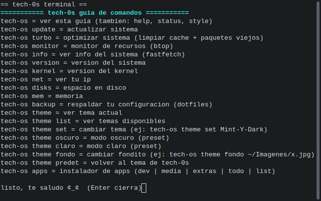
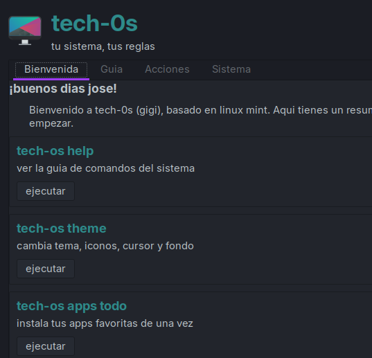
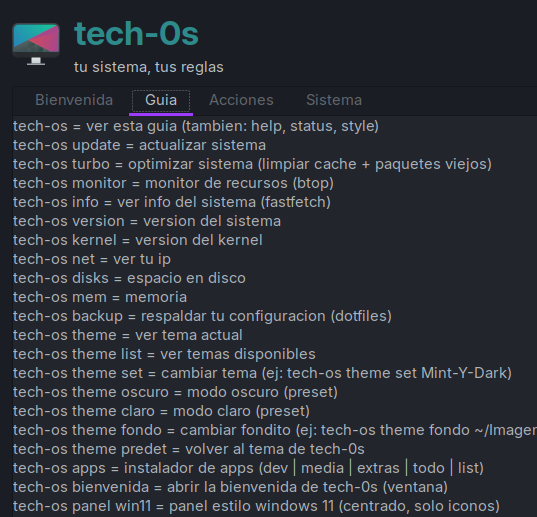
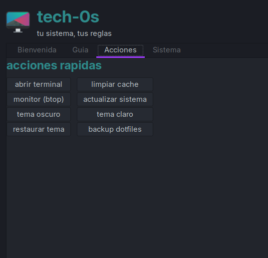
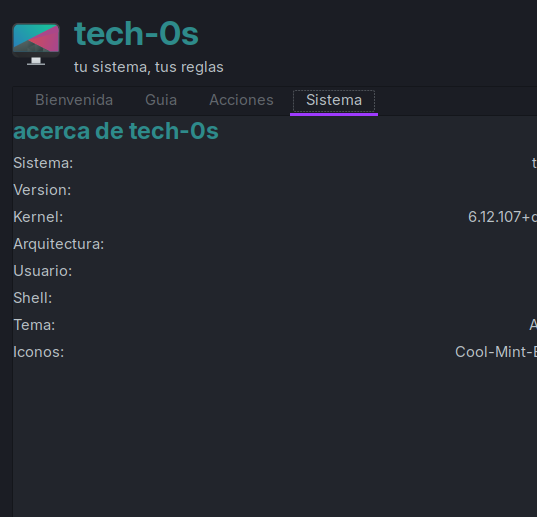

La distro personal de tech-0s · basada en LMDE 7 · Debian Trixie · Cinnamon
64-bit BIOS + UEFI ~2.9 GB Copyleft
tech-0s 7 "gigi" es un sistema operativo ligero y de aspecto futurista, con arranque personalizado, tienda de apps, terminal propia y un reparador que arregla fallos.
Pensado para laptops modestas: consume poca RAM y responde suave.
La terminal trae tech-os ia: escribe qué falla y te ayuda a arreglarlo.
Herramientas tech-os con ayuda integrada y comandos en español.
Tech-Tienda reúne APT y Flathub en un solo sitio, sin menús escondidos.
Construido sobre Debian Trixie (LMDE 7) y Cinnamon: confiable y conocido.
Compatible con BIOS y UEFI, desde USB o DVD. También para máquinas virtuales.
Hecho a mano, sin telemetría y copyleft: el sistema es 100% tuyo.
Mission Center muestra CPU, RAM y GPU en vivo, sin que adivines.
Vistas del escritorio tech-0s 7 "gigi".






Esta es la septima versión de tech-0s. Recoge todo el trabajo hecho desde la 6.
Funciona en cualquier equipo de 64 bits. También arranca en máquinas antiguas, pero con 2 GB de RAM irá justo.
| Ubicación | Espejo | Descarga |
|---|---|---|
| Permanente | Internet Archive | tech-0s-7-gigi.iso · detalles |
| Permanente | Torrent | archivo .torrent |
| Local | Servidor tech-0s (temporal) | Enlace temporal no disponible — usa Internet Archive |
Internet Archive es el espejo permanente: funciona aunque el equipo de quien lo subió esté apagado.
Cualquiera puede fabricar ISO falsas. Verifica siempre tu descarga antes de instalarla.
cargando sha256...
sha256sum -c sha256sum.txt
En Windows con PowerShell: Get-FileHash .\tech-0s-7-gigi.iso -Algorithm SHA256
SHA-1 4df245c086bfb98f70028a74ce3b99accbb5cae0 MD5 9f3898574af5d89fdc6ed04dcffbe69b CRC32 6dc8f31d Tamaño 2960257024 bytes
tech-0s-7-gigi.iso y verifica su SHA-256 (sección anterior).dd, en Windows con balenaEtcher.F12, F8 o F2).tech-os help, la Tech-Tienda y tech-os ia.dd if=tech-0s-7-gigi.iso of=/dev/sdX bs=4M status=progress conv=fdatasync
Sustituye /dev/sdX por tu USB. ¡Cuidado! Borra el dispositivo que indiques.
Sí. tech-0s es software libre y se distribuye bajo copyleft. Puedes descargarlo, usarlo y compartirlo sin coste.
tech-0s parte de la misma base (LMDE 7 / Debian Trixie) pero lleva su propio tema oscuro, arranque animado,
Tech-Tienda y utilidades propias como tech-os ia y tech-os help. Si buscas algo
parecido a Mint pero con identidad propia, esta es la distro.
Con 64 bits y 2 GB de RAM arranca. Si tu equipo no tiene soporte de 64 bits, esta ISO no te servirá.
Sí. La instalación no necesita conexión, y tech-os ia repara errores sin internet. Para instalar
paquetes o actualizar sí necesitarás conexión.
El tema oscuro de tech-0s viene de serie y los fondos incluidos están en el Escritorio. Cambia el fondo con el botón derecho del escritorio y luego en Cambiar fondo de pantalla.
Desde el sistema instalado, ejecuta tech-os help, que abre el canal de reporte. También puedes
escribir por la página del proyecto en GitHub.
Probando la ISO, reportando errores con pasos claros y mostrando tech-0s. Todo el código es libre: puedes mejorarlo.
tech-0s es software libre. El código de los componentes propios está bajo licencia copyleft y los paquetes de Debian bajo sus respectivas licencias libres.
Hecho a mano. tech-0s no está afiliado a Linux Mint, LMDE ni el proyecto Debian.